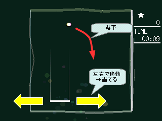
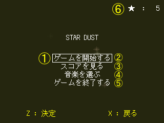
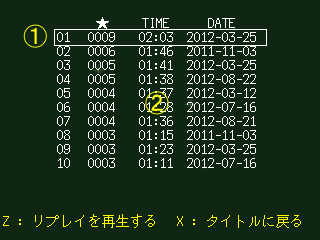
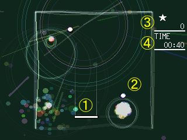

左右キーとボタン一つのみ使用するシンプルなアクションゲームです。

画面上部から星屑（白い丸印）が落ちてきますので、画面下部のバー（白い四角形）を左右に動かし、打ち返して下に落ちないようにしてください。
星屑は10回打ち返すと光り出し、もう一度当てることで空へと打ち上げることができます。
星屑を下に落とすことなく、多くの星屑を空へ打ち上げることが目的です。
時間が経つと星屑が追加され、左右の移動では間に合わなくなってきます。
その時はZキーまたはXキーを押してください。移動中の方向に高速移動することができます。
高速移動使用時には、移動前の位置に残像が残ります。この残像でも星屑を打ち返すことができます。
高速移動を使用後は、星屑を打ち返すまでは次の高速移動を使うことができません
（連続して高速移動を使うことはできません）。
ゲームの結果は自動的に記録され、良い結果はリプレイを閲覧することができます。
「stardust.exe」アイコンをダブルクリックで実行してください。

| # | 名前 | 説明 |
| 1 | 選択中記号 | 現在選択中の項目を表します。 |
| 2 | メニュー「ゲームを開始する」 | ゲームを始めます。ゲーム画面を参照ください。 |
| 3 | メニュー「スコアを見る」 | スコア一覧を表示します。スコア一覧画面を参照ください。 |
| 4 | メニュー「音楽を選ぶ」 | ２曲ある音楽を切り替えます。 |
| 5 | メニュー「ゲームを終了する」 | ゲームを終了し、ウィンドウを閉じます。 |
| 6 | ★ | ゲームで得た総スコア（打ち上げた星屑の数）を表示します。 |

| # | 名前 | 説明 |
| 1 | 選択中記号 | 現在選択中の項目を表します。 |
| 2 | 過去のスコア一覧 | 上位１０回分のスコアを表示します。Zキーでリプレイを再生します。 |

| # | 名前 | 説明 |
| 1 | バー | 星屑を打ち返します。左右キーで移動できます。 |
| 2 | 星屑 | 放物運動で移動します。下に落とすとゲームオーバーです。11回以上打ち返すとスコアが増えます。 |
| 3 | ★ | スコアです。 |
| 4 | TIME | ゲームのプレイ時間です。 |
| # | ボタン | 動作 |
| 1 | Zキー | 決定する。 |
| 2 | Xキー | 取り消しする。 |
| 3 | 方向キー | メニューの選択をする。 |
| 4 | Hキー | ←（方向キー）と同様。 |
| 5 | Jキー | ↓（方向キー）と同様。 |
| 6 | Kキー | ↑（方向キー）と同様。 |
| 7 | Lキー | →（方向キー）と同様。 |
| # | ボタン | 動作 |
| 1 | 左右キー | バーを移動する。 |
| 2 | 左右キー ＋ ZキーまたはXキー | 高速移動する。 |
| # | ボタン | 動作 |
| 1 | →キー | 再生速度を高速化する。 |
| 2 | ←キー | 再生速度を低速化する。 |
| 3 | Zキー・Xキー | タイトルに戻る。 |
| # | ボタン | 動作 |
| 1 | Esc | 強制的にゲームを終了する。 |
| 2 | F1 | FTPを表示する。 |
| 3 | F2 | 音楽の再生／停止を切り替える。 |
| 4 | F3 | 効果音の再生／停止を切り替える。 |
| 5 | F5 | 画面のサイズを切り替える。ボタンを押す度に、320x240、640x480、960x720に設定する。 |
| 6 | F6 | 画面のサイズをやや小さくする。 |
| 7 | F7 | 画面のサイズをやや大きくする。 |
| 8 | F8 | 音楽・効果音の音量をやや小さくする。 |
| 9 | F9 | 音楽・効果音の音量をやや大きくする。 |
| 10 | F12 | タイトルに戻る。 |
| 11 | スペース | ゲームを一時中断する。 |
| 12 | PrintScreen | フォルダ「ss」に現在の画面を保存する。 |